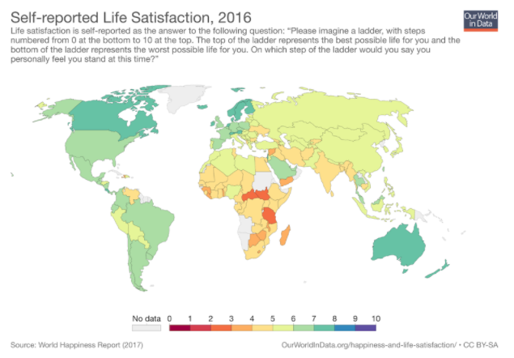

guides
guides
We currently have three categories of guides available, which are all written for middle and high school students. All of them explore different aspects of science research, why it is important, and how you can learn more about it.
Abstracts: What They Are & How to Write Them
Abstracts: What They Are & How to Write Them
Written by Niket Sampalli, Edited by Catherine Fei
An essential part of any scientific research paper or article is an abstract. An abstract is a paragraph that should give the reader an idea of what a paper is about, and how the information will be presented. In short, it should be a concise summary of an otherwise long article. Often, this is the only component of the article that is provided to the public; the rest must be purchased. There are essential elements in every abstract which should capture the main idea of the study, the key points of the paper, and also the interest of the reader.
There are essential elements in every abstract which should capture the main idea of the study, the key points of the paper, and also the interest of the reader.
- Purpose: This is where the topic of the paper is introduced to the reader, and where the purpose of the research is stated. This section should describe the significance of the report and importance of the topic, which will explain the problem that was addressed through the research.
- Method: This section will explain how the research was conducted, as well as any experiments involved. This could include the equipment used, the design of the experiment, and how participants were selected and assigned for the experiment.
- Results: An abstract should also contain a brief explanation of the results gathered from the study, and what was discovered from the experiment/research. It is recommended to just include the main findings, and not every detail of the results.
- Conclusion: Lastly, a conclusion is necessary to tie everything together. This final section should explain why the results are significant, and their implications in society, and also what has been contributed through the results of this research. It is also important to include actions that could be taken to apply the findings of the investigation.
There are two types of abstracts in scientific writing:
One is an informative abstract, which is the form that was described and shown above. This abstract should contain the purpose, method, results, and conclusions, and should be between one paragraph and a page, depending on the length of the paper.
The second type is a descriptive abstract. This should be much shorter than an informative abstract, as it should only include the purpose and the method. The rest is for the reader to discover in the actual report. Generally, descriptive abstracts should be around one hundred words.
Below is an example of a study and its informative abstract:

Tips to write an effective abstract:
Never go into too much detail in an abstract, as there is still an entire paper to follow. It should state the key points and ideas so that the reader can grasp the bigger picture. Remember to follow the structure of the paper when writing an abstract. Each section in the abstract should be presented in the same order as the paper. Always write the abstract after having completed a draft of the paper. This will make it easy to highlight the key points from the paper in the abstract, and will provide an effective summary of the writing to follow.
References
The Writing Center. (n.d.). Writing an Abstract. George Mason University. https://writingcenter.gmu.edu/guides/writing-an-abstract
PM Proofreading. (n.d.). Five Elements to Include in Your Abstract. https://proofreadingmalaysia.com/five-elements-to-include-in-your-abstract/
Purdue Owl Writing Lab. (n.d.). Writing Report Abstracts. Purdue University. https://owl.purdue.edu/owl/subject_specific_writing/professional_technical_writing/technical_reports_and_report_abstracts/index.html
Cherry, K. (2020, April 15). How to Write an APA Abstract. Very Well Mind. https://www.verywellmind.com/how-to-write-an-abstract-2794845
How to Access Reliable Science Research
How to Access Reliable Science Research
Written by Amanda Headrick, Edited by Catherine Fei and Gurdial Gill
Curiosity about the research process and potential interest in pursuing a career in research drive students to try and find research articles, but they often don’t know where to find them, or get blocked by paywalls. This guide is here to help you explore research related to your interests.
Reliable Science Research: Peer Review
Before we get into the list there is something we should clarify: what do we mean by reliable science research? Research articles published in scholarly journals are considered reliable because they are peer-reviewed before they are published. When an article is peer reviewed it means that other experts in that field have reviewed the quality of the research and the methods used to conduct it. Researchers who want their article published will document their procedures and admit any limitations to their research. This ensures that research articles that contain obvious mistakes in their research that heavily distort the results will not be published. A properly peer reviewed article will add to the pool of knowledge it was researching and guide the path for future research in that area. There are, however, journals that commit what is called ‘predatory publishing’, which is when publishers mislead both researchers and the public by publishing articles without review or editing by qualified researchers or even at all. In the further reading section I have included a link to a list of journals suspected of predatory publishing.
Conflict of Interest
Another potential threat to the reliability of research articles is conflict of interest, which is when one or more of the scientists conducting the research has personal or financial considerations that could interfere with their ability to conduct or report the research done in an honest manner. For example: imagine a clinical research about a nutritional supplement’s effects on health. There could be a conflict of interest if the research was being heavily funded by the company that sells that supplement, or a member of the research team was a member of the company that sells it, or published in a journal funded by the company that sells it. These conflicts have to be stated by the researchers when they are applying for grants to conduct research, and there is often a statement in individual articles declaring the presence or absence of conflicts of interest. If research results sound too good to be true, it doesn’t hurt to try and see if undisclosed conflicts are present. If there is a potential conflict of interest in a research article, it will be helpful to try and find other articles without the conflict of interest and see if the results are in line with each other.
Searching For Research
So where do you start trying to find research articles? An easy option is to use Google Scholar. This is like regular google, but instead of searching the whole internet it searches only for scholarly articles and books. It has a sidebar for narrowing things down by date on the left and a column on the right that sometimes contains links that lead directly to PDFs of the article (image below).

Otherwise it will give you links to websites where you may be able to freely read the article, although some websites will not let you read their articles for free.
Some reputable publishers that are open access, which means you can read the articles there for free, include Public Library of Science (PLOS), Elsevier’s Open Access Journals, and other journals listed on the next link in the further reading section.
Some research articles are not available to read for free at the main publishing site but there are still copies elsewhere that can be viewed freely. Browser extensions such as Unpaywall can help redirect to those copies more quickly, and Unpaywall is one of the free ones. Another option for finding articles is through public libraries.
Public libraries can give students access to many different databases spanning countless subjects that can be accessed through a library card.
Further Reading
List of dubious journals compiled by librarian and associate professor Jeffrey Beall: https://scholarlyoa.com/publishers/
List of reputable open access journals: https://guides.lib.jjay.cuny.edu/c.php?g=399417&p=3262493
Science Journals
Science Journals
Written by Cindy Zhang, Edited by Catherine Fei
What are science journals?
Science journals are collections of published works by scientists. If you have done any research project in the past, you would probably have seen some science journals. They are more advanced than a typical blog or newspaper article because they contain more technical information, which is useful if you want to go deeper into a scientific topic. Some well-known journals include Nature and Science.
How to find science journals
Many science journals are now online, so you can just Google a journal or a topic that you are interested in. There are also databases that you can search which contain a large collection of articles from various journals, such as PubMed, JSTOR, or Google Scholar.
Tips for checking the reliability of a journal
There are many journals to choose from, but how can you know which ones are reliable? Here are some tips you can use to check the reliability of a journal online:
- Look for journals that are peer-reviewed, which means that their articles were reviewed by several experts in the field before being published. These articles are more likely to be accurate because they are verified.
- Make sure that the authors of the article are from accredited universities or research institutions, because there are unreliable institutions out there whose research might be agenda-driven or biased.
- Consider the date that the article was published. The scientific community is always advancing and gathering more information, so the more recent, the better.
How to cite journals
In most citation styles, such as APA or MLA, the journal name, either full or abbreviated, is required and usually comes after the title of the article. You will also find a digital object identifier (DOI), which is an identification code for that particular article and journal that someone else can use to directly access it. The Purdue OWL website has some citation examples and is a great resource if you want to learn more about how to cite journal articles.
Types of articles
There are two main types of articles found in science journals: primary research articles and review articles. Primary research articles are where scientists can share the findings of an experiment that they had done. Review articles gather data from multiple primary research articles and summarize them together, creating a more holistic view of research in a certain topic.
Sections of a journal article
A journal article is typically made up of five sections:
- Abstract
- Introduction
- Methods
- Results
- Conclusions/Interpretations/Discussion
This guide will not go into each section in detail, because each section has its own specifications. The abstract is the first section of an article and helps you determine whether that article has the information you need. After, you can look at the figures or skim through the discussion. As you read more journals, you will get used to this standard structure and come up with your own way of looking for information. To fully understand an article, you will need to understand the methods and how they arrived at the results. You should think about the advantages and limitations of the study and compare it to other studies that it references. As a scientist, you should be able to critically analyze journal articles to build your own understanding.
Further Reading
https://www.angelo.edu/services/library/handouts/peerrev.php
https://www.sciencemag.org/careers/2016/03/how-seriously-read-scientific-paper
Wet and Dry Lab Research
The difference between wet and dry lab research
Written by Jessica Wang, Edited by Catherine Fei and Gurdial Gill
Wet and dry labs can either refer to the physical laboratory spaces, as well as the methods and the research data it produces.
Wet Lab
The first idea that comes to mind for wet labs are bubbling gases, Erlenmeyer flasks and vials of bacteria. Wet lab research is conducted in traditional laboratories and often works with fluids and instruments, such as chemical solutions, gases, drugs, bacteria, enzymes, or physical optics experiments.
For the physical space, they require lab benches, sinks, refrigerators, as well as safety considerations, such as eyewash stations, safety showers, fume hoods, ventilation systems and waste disposal containers or areas to prevent issues arising from spillage and contamination.1 Other specific equipment may be required depending on the particular laboratory, such as sterilization equipment for virology or bacteria labs, centrifuges for separation, and even cages for animal testing. Various taps, such as those for certain gases or distilled water, may also be installed.
Dry Lab
The dry lab has developed from a description of physical spaces for dry material storage to referring to experiments' computational and data analysis aspects. These include modelling and prediction software.
The physical laboratories are often computer labs that require computers or other specialized robust computing systems. As a result, they may need procedures to control temperature, humidity, and potentially dust, as these can affect the labs' instruments.2
Applications & Examples
In modern science, wet and dry labs are often integrated with each other.
Industrial Example: Pharmacology & High-Throughput screening
A standard method for discovering new drugs is high-throughput screening. It is an automated process that tests the effectiveness of many drugs or molecules, often by seeing if it binds to the therapeutic target such as a receptor or another molecule in the body. It has a wet lab component of testing binding and therapeutic effectiveness in aqueous solutions. Still, computers are required to filter out the potential molecules because of the sheer amount of data.
For example, one team of experimenters used high-throughput screening to test out 150,000 small organic molecules at 5μM concentration. This test was performed to see if it inhibited a different molecule receptor to a receptor associated with virulence enterohemorrhagic Escherichia coli, which causes diarrhea.3 With this method, they found precisely one molecule. Testing this many molecules would be impossible without the integration of wet and dry lab.
Molecular biology
Molecular biology is another field which was traditionally dominated by experimental wet labs, but dry labs and computation have drastically changed measures. The wet lab component mainly focused on handling very delicate procedures, such as crystallography, PCRs, and flow cytometry, with many reagents and solutions, such as those done to find the structure of ACE2 receptors involved in COVID-19.4
The rapid development of technology to sequence entire genomes or characterize proteins has created so much data that dry lab methods of computation have become necessary. One exciting area of effect is computational biology to predict the 3D structures of proteins, which is incredibly complex due to the number of interactions between amino acids.
As such, wet and dry labs are both crucial to the development of future research.
References
- National Institute of Building Sciences. (2019b, February 4). Laboratory: Wet. Whole Building Design Guide. https://www.wbdg.org/space-types/laboratory-wet
- National Institute of Building Sciences. (2019a, January 23). Laboratory: Dry. Whole Building Design Guide. https://www.wbdg.org/space-types/laboratory-dry
- Rasko, D. A., Moreira, C. G., Li, D. R., Reading, N. C., Ritchie, J. M., Waldor, M. K., Williams, N., Taussig, R., Wei, S., Roth, M., Hughes, D. T., Huntley, J. F., Fina, M. W., Falck, J. R., & Sperandio, V. (2008). Targeting QseC Signaling and Virulence for Antibiotic Development. Science, 321(5892), 1078–1080. https://doi.org/10.1126/science.1160354
- Wang, Q., Zhang, Y., Wu, L., Niu, S., Song, C., Zhang, Z., Lu, G., Qiao, C., Hu, Y., Yuen, K.-Y., Wang, Q., Zhou, H., Yan, J., & Qi, J. (2020). Structural and Functional Basis of SARS-CoV-2 Entry by Using Human ACE2. Cell, 181(4), 894-904.e9. https://doi.org/10.1016/j.cell.2020.03.045
Knockout mice and science research
Knockout mice and their use in science research
Written by Jessica Wang, Edited by Catherine Fei and Anna-Lisa Nguyen
They are not mice that won a boxing match. Instead, knockout refers to genetically altered mice with an inactivated gene. To study the effects and mechanisms of a gene, looking at family members or the protein sequence produced by the gene is not sufficient. Even close relatives have a large number of variations in genes, while protein function is hard to determine from the sequence alone. 1 As such, scientists must isolate the gene; however, it is unethical to purposely infect a human with a disease. Thus, knockout mice are used because their genome is 99% similar to humans’ genome, have short life spans, and high reproductive capabilities. 1
Knockout mice are usually used for recessive diseases. 1 Humans and mice inherit two copies of a gene at a specific location or locus. These copies are called alleles. To produce a recessive disease, both copies must be the same recessive allele (compared to dominant alleles that only need one copy to produce its effects). The scientific term for having two identical alleles is homozygous. For dominant diseases, researchers can insert the dominant allele without changing the rest of the genome, but this would not work for recessive diseases. 1 As such, knockout mice require researchers to “knock out” or inactivate both copies of their gene.
Production
To produce knockout mice, murine embryonic stem cells (ES cells) are harvested from mice embryos and would be genetically altered using either a modified viral vector or bacterial DNA. 1,2 This can be done through two different methods.
Homologous recombination
This utilizes the DNA repair mechanism in the body that replaces damaged sequences with similar DNA. 1 Vectors would have a long strand of DNA that is homologous or the same as the original sequence, except for the inactive or altered portion of the gene. This sequence would be exchanged with the original; 2,3 however, there is a low success rate. To make sure the replacement worked, researchers often include markers or reporter genes in the sequence that signals if the DNA was exchanged in the right place. 2
Gene Trapping
This does not directly target a certain gene. Instead, the altered DNA would be inserted randomly, and this insertion would prevent the RNA splicing and expression of that gene, effectively knocking it out. 3 This altered DNA would often contain a reporter gene that would tell the researchers where the sequence was inserted. 3 The benefit to this method is that the specific DNA sequence of the gene does not have to be known, but it can potentially knock out a large variety of genes so extensive testing is needed to determine which where the DNA sequence is affected. 3
Once the sequence is inserted into the ES cells, it would be injected into blastocysts in the uterus of a female mouse to produce a chimeric mouse. 1,2 These ES cells can develop into a variety of cells, including germ cells, which contains the DNA passed on to its offspring. However, at this point, the chimeric mouse still has some normal tissue, so more crossbreeding is needed to create a homozygous (both copies of the gene are the same) knockout mice. 2
Applications
Knockout mice are incredibly useful as models of diseases, including cancer, diabetes, and Parkinson’s, where researchers can see how the gene functions or test pharmaceuticals and treatments on the mice. They are especially helpful for developmental genes, such as SF-1 that is essential for adrenal gland and gonad development, or single gene mutation diseases, such as cystic fibrosis. 2 These mice are often named for the gene they knock out. For example, the Cx3cr1 knockout mice (also symbolized by Cx3cr1-/-) affect the microglial chemokine receptor, so they were used to study microglia in neuron loss in Alzheimer’s disease. 4
Bottom line: Knockout mice are useful for testing the effects of a specific gene.
References
- Hall B, Limaye A, Kulkarni AB. Overview: Generation of Gene Knockout Mice. Curr Protoc Cell Biol [Internet]. September 2009 [cited 05 February 2021];44(1). Available at: https://onlinelibrary.wiley.com/doi/10.1002/0471143030.cb1912s44
- Majzoub JA, Muglia LJ. Knockout Mice. N Engl J Med. 04 April 1996;334(14):904–6.
- National Human Genome Research Institute. Knockout Mice Fact Sheet [Internet]. National Human Genome Research Institute. 2020. Available at: https://www.genome.gov/about-genomics/fact-sheets/Knockout-Mice-Fact-Sheet
- Fuhrmann M, Bittner T, Jung CKE, Burgold S, Page RM, Mitteregger G, et al. Microglial Cx3cr1 knockout prevents neuron loss in a mouse model of Alzheimer’s disease. Nat Neurosci. April 2010;13(4):411–3.
Academic Conferences
Academic Conferences
Written by Niket Sampalli, Edited by Catherine Fei and Anna-Lisa Nguyen
Once a scientist or researcher conducts their research and writes a paper, all that remains is to expose their findings to the scientific world. Academic conferences provide a platform to accomplish this and serve as a means for researchers to present and discuss their work through a series of presentations. 1 They go by many different names, including research conference, academic congress, academic meeting, or symposium. 1 These conferences are an interactive form of scholarly communication, as they allow researchers to exchange information and findings with professionals in their respective fields. After presentations, members of the audience are free to share opinions, reactions, and feedback and ask the presenter questions. 2
Academic conferences can range from small meetings between researchers to large global events. Smaller or specialist conferences often maintain a sharp focus on specific topics. In comparison, larger panels are more general and interdisciplinary, meaning they bring together professionals from various backgrounds and unique perspectives. 1 Also, the types of meetings can be further subdivided into professional and undergraduate—professional conferences gear towards professors rather than students. Of course, some undergraduate students will be present, but solely as co-authors contributing to a larger piece of work. 3 Undergraduate conferences are open primarily to university students, and more oriented towards the workshop style, discussed below. Undergraduate students usually lack much of the necessary experience to be a successful researcher, so these conferences provide career and research advice through interactive and engaging material. 3
Currently, conferences are to adapt to the online COVID-19 world in web conferences. Some advantages of these types of meetings are easy accessibility and the negation of travel-related costs. 2
Types of Presentations
Academic conferences typically have packed schedules filled with several presentations. These presentations provide an excellent opportunity for scientific researchers to discuss their latest work, leading to new developments and providing inspiration for like-minded academics. 1 In larger conferences, multiple presentations often run simultaneously due to the number of topics to cover. A single panel typically consists of a wide variety of exhibits, of which the main types are described below:
Keynote Sessions: These sessions are run by speakers that are specifically placed to inspire and set the tone for the entire conference, and they are usually scheduled at the beginning of the event. 1 These speakers are professionals or scholars in fields that align with the overall theme of the conference. 2
Panel Sessions: These sessions are usually more of a discussion or debate-style presentation between multiple researchers. The audience will also have ample opportunity to pose questions to the researchers regarding their work or opinions. Panel sessions are designed to provide a platform for the exchange of viewpoints between the panelists, who are typically experts in different areas of the topic being discussed. 1
Poster Sessions: These are the most common sessions in scientific academic conferences. Prior to the conference, presenters would have created a physical or digital poster to display their research to the audience. 1 Multiple poster sessions can take place simultaneously, and they allow for close examination and interpretation by the audience. The audience is free to engage in dialogue with the presenter after the research has been introduced, as the poster will usually be enough for the audience to understand the key points and discuss the information with the presenter. 1
Workshop Sessions This special type of session is targeted towards new researchers, usually undergraduate students, looking to gain both advice and experience. Workshops serve as a means to educate budding researchers on subjects that will be useful in future research endeavours. 1
Reasons to Attend
Academic conferences are the perfect opportunity to present research to experts in similar fields and advise how to strengthen work. They also allow academics to stay up-to-date with the latest findings and trends in their areas of interest. 1 Along with this, attending conferences is extremely useful for students and new researchers. By following these prestigious events, students can be immersed in other researchers' work, and professionals will surround them. Conferences allow students to build valuable relationships with professionals that can facilitate future research and enable students to gain helpful experience if they are interested in applying to a graduate school. 3
Submitting Work
Researchers who are interested in presenting their work at academic conferences are required to submit a short abstract of their research. 2 Please refer to our guide titled "Abstracts: What They Are & How To Write Them" for further information on how to write a useful abstract.
Conferences will put out notifications called a "Call for Abstracts," They will specify a period for abstract submissions. 4 The conference committee will ultimately decide whether or not a particular abstract is of the expected quality and fits within the conference theme's scope. It is typical for the novel or unusual submissions to be accepted, as they tend to inspire opportunities for new research avenues. 4 For students interested in presenting at a conference, they should contact professors or other faculty members at their institution, as they will most likely be familiar with any local opportunities to submit abstracts. If students know of any organizations that run regular conferences, signing up for their newsletters and checking their websites must stay on top of deadlines. 4
In terms of choosing a conference to attend, for first-time participants, it is smarter to submit an abstract to a smaller local forum in which the selection process is less harsh. Once a student has acquired substantial experience, larger international conferences are a great option as they are usually more prestigious due to the amount of academics that attend and the funding required to hold the event. 4 When attending international conferences, personal financing may be an issue. However, many universities or other institutions usually have an option for their students to apply for funding. If budget is an issue, local conferences are much more feasible to attend. 3
References
- McCurry, D. (2020, November 24). A Complete Guide to Academic Conferences. https://www.exordo.com/blog/guide-to-academic-conferences/
- Academic conference. (2019, November 03). https://www.newworldencyclopedia.org/entry/Academic_conference
- Buddie, A. M. (2016, September). Academic conferences 101: What they are, why go, how to present and how to pay for it all. American Psychological Association. https://www.apa.org/ed/precollege/psn/2016/09/academic-conferences
- How to Get Accepted to an Academic Conference. Conference Monkey. (2018, October 8). https://conferencemonkey.org/advice/how-to-get-accepted-to-an-academic-conference-813610
Accessing and Using Research Databases
Accessing and Using Research Databases
Written by Karena So, Edited by Catherine Fei and Anna-Lisa Nguyen
Google is an excellent resource to use if you are looking for general information and an overview of your interest topic. However, Google is a search engine, which means it provides all the websites that contain the key terms you search. This becomes an issue when unreliable, and inaccurate sources are provided. Databases do not contain websites and instead consist of journal articles (sometimes books, thesis and news articles). The papers have been published, which means it has been reviewed and edited to ensure that the information is correct. 1
Many research databases are available online. However, most of the databases have some access requirements, such as asking you to create an account to access the content. Some public libraries have databases that give access to anyone with a library card. Universities, colleges, and other institutions generally have a mix of different databases available to their students and staff. 2
Below are some effective types of database searches: 3
Keyword Searching
The database searches all available fields for your search terms. "Fields" are pieces of information that the database keeps for each article. 4 In the example below, the keywords "video games" and "aggressive behaviour" are bolded in every field where they appear, including Titles, Subject Terms, and Abstracts.

Subject Searching
The database only searches subject heading fields for the search term. Many databases have a controlled vocabulary in a list of standardized subject headings, usually located in a section called subject terms or thesaurus.
In the example below, when the term "adolescents" is searched under the section "Subject Terms", the database shows that the preferred term is "TEENAGERS"
Phrase Searching
To search for an exact phrase, place quotation marks around the phrase. An example is when searching for "United Nations" (with the quotation marks), the database will only show results where the two words appear together.
Boolean Operators
To search for combined terms, Boolean operators, or connectors, are used.There are three main Boolean operators:
AND
Database will retrieve articles that mention both terms somewhere. The use of AND generally retrieves fewer but more focused results. Example: Childhood obesity AND exercise
OR
Database will retrieve articles that mention either term. The use of OR generally retrieves a larger set of results. The OR operator is useful for terms that are synonyms or convey the same concept. Example: Cloning OR genetics OR reproduction
NOT
The use of NOT will remove search results that contain a specific term. The use of NOT generally retrieves fewer but more relevant results. Example: Eating disorders NOT anorexia
Truncation
Truncation allows you to search for all variants of a root word. Enter the root word followed by the truncation symbol. Many databases use the asterisk (*), others use the question mark (?). Check the Help page for the database to determine the symbol for truncation.
Example: The search term plagiar* will return results that include terms:
- Plagiarism
- Plagiarize
- Plagiarizing
- Plagiarized
- Plagiarizer
- Plagiarizers
- Plagiarist
Summary of Types of Database Searches
| Type of Database Searching | How to Search | Expected Results | Example |
|---|---|---|---|
| Keyword Searching | Usually the default search | All available fields searched, including titles, keywords, or abstracts | Keywords "video games" and "aggressive behavior" are bolded in every field where they appear, including Titles, Subject Terms, and Abstracts. |
| Subject Searching | Subject headings are usually located in a section called subject terms or thesaurus | Only searches subject heading fields, according to standardized vocabulary list | When the term "adolescents" is searched under the section "Subject Terms", the database shows that the preferred term is "TEENAGERS” |
| Phrase Searching | To search for an exact phrase, place quotation marks around the phrase | Only searches items containing the entire phrase | When searching for "United Nations" (with the quotation marks), the database will only show results where the two words appear together |
| Boolean Operators | AND: Generally retrieves fewer but more focused results | Database will retrieve articles that mention both terms somewhere | Childhood obesity AND exercise |
| OR: Generally retrieves a larger set of results | Database will retrieve articles that mention either term. | Cloning OR genetics OR reproduction | |
| NOT: Generally retrieves fewer but more relevant results | The use of NOT will remove search results that contain a specific term | Eating disorders NOT anorexia | |
| Truncation | Enter the root word followed by the truncation symbol, usually asterisk (*) or question mark (?) | Searches for all variants of a root word | The search term plagiar* will return results that include terms: Plagiarism, Plagiarize, Plagiarizing, Plagiarized, Plagiarizer, Plagiarizers, Plagiarist |
Tips for effective use of databases: 5
- Search multiple databases for articles related to your topic
- Find an article that is similar to your topic and look at the terms used to describe it then use them for your database search
- Use databases that provide full-text articles to save time searching for your articles elsewhere (some articles only provide abstracts or summaries)
- If you are unfamiliar with your topic, start with a broad search from sources such as overviews, summaries or review articles
- Start with the most recent issues of the journals and then work backwards in time
- Check the references section at the end of articles for additional sources
- Look for conference papers for reports on recent research developments
- Always check articles carefully for authenticity and quality, and be cautious about misinformation
References
- Montgomery, J. (2020, November 9). Why Use Databases, Not Google? Western Kentucky University Libraries. Retrieved November 27, 2020, from https://libguides.wku.edu/c.php?g=946465&p=6891281
- University of Washington. (2020, October 9). Who can access databases, e-journals, e-books etc. and from where? Retrieved November 27, 2020, from https://guides.lib.uw.edu/research/faq/access
- Benedictine University. (2020, September 11). Module 4: Searching a Database. Retrieved November 27, 2020, from https://researchguides.ben.edu/general-research/searching
- American Public University System. (2018, November 25). Q. What is "field searching"? Retrieved November 27, 2020, from https://apus.libanswers.com/faq/2420
- Grewal, A., Kataria, H., & Dhawan, I. (2016). Literature search for research planning and identification of research problem. Indian journal of anaesthesia, 60(9), 635–639. https://doi.org/10.4103/0019-5049.190618
Data Visualization
Data Visualization
Written by Amanda Headrick, Edited by Catherine Fei and Gurdial Gill
Data visualization refers to various techniques for making graphical representations of data. The visualization includes graphs, plots, charts, and Venn diagrams. There are two significant distinctions used for data visualization: quantitative visualizations, used to illustrate quantitative (information about quantities/numbers) data, and categorical, used to represent characteristics. Quantitative data comes in two categories: continuous or discrete. Discrete data has fixed points of measurement that are possible.
An example of this is the number of people in a room since you can have 1, 2, 3, etc., people in a room, but there can’t be 1.05 people in a room. Continuous data can be anything within a range of data. For instance, data on heights are persistent because the measured size can be 100 cm, or 101, or 101.0001 cm without being fixed at specific values. Categorical data can be ordinal or nominal. Nominal data includes categories that aren’t ranked or ordered, such as country of origin. Ordinal data is requested, such as attributes on scales.
Continuous vs Discrete data example
((2008). Difference between discrete and continuous data [Image]. Basic Mathematics.com. Taken from https://www.basic-mathematics.com/discrete-and-continuous-data.html)
Ordinal
Pennsylvania State University. (2018). 1.2 - Discrete Data Types and Examples. Retrieved December 02, 2020, from https://online.stat.psu.edu/stat504/node/1/
Nominal
((2020). Types of Data & Measurement Scales: Nominal, Ordinal, Interval and Ratio [Image].My Market Research Methods. Taken from https://www.mymarketresearchmethods.com/types-of-data-nominal-ordinal-interval-ratio/)
Importance
Data visualization is useful for organizing complex information in ways that can be understood by a broad audience. Suppose a scientist needs to explain their work's main findings to a group of policymakers to convince them to change an individual policy. In that case, a graphic can help illustrate concepts that would otherwise be harder for non-scientists to understand. Visualizing data can also let people see patterns that would be harder to notice when just given the data itself without the visual to help them contextualize their information. Thus, data visualizations must be accurate and understandable. Otherwise, they will be ineffective or actively misleading. Useful data visualizations organize large sets of data into digestible information segments, are organized logically, allow for comparison between separate areas of data, reveal multiple levels of detail, and integrate with other descriptions of the data, have legends and scales. Bad data visualizations are cluttered, lack or have unclear codes or scales, follow conventions on graph usage, and distort the data they are supposed to represent.
Good Example
(Clear scale, gives context with description, logical organization of representing data from countries using a map, allows comparisons between different countries)
Bad Example
(Pay attention to the scales on this graph and where they start. The red in this graph represents murders. The chart begins at the top and goes further down when the number of murders increases, an inverse to this type of graph's conventions. This could mislead people into thinking that when the black dotted line goes up, it means more deaths when the opposite is true.)
Tools for Students
There are numerous free tools to used to visualize data. These include applications like Microsoft Excel, Numbers, and Spreadsheets that you likely have access to because they come in bundles with things you already need for class. R is free software with some data visualization features. we can find various resources and tutorials through YouTube, online courses, or websites and databases with walkthroughs and shortcuts.
Essential Components of Scientific Papers
Essential Components of Scientific Papers
Written by Niket Sampalli, Edited by Catherine Fei and Gurdial Gill
After conducting an experiment or researching a particular topic, writing a scientific paper is a popular method of sharing this knowledge with other scientific community members. Most scientists will refer to other scientists' papers when conducting their research, so these papers are integral to the development and evolution of science's collaborative field. 1
All scientific papers should follow a universal framework so that readers can efficiently locate the information that they are looking for. 2 The essential components of a typical scientific paper are described below in detail:
Title: The title is the element of the paper that will be immediately visible to the reader. In a short sentence, it should provide a solid understanding of the contents of the study. The species, groups, demographics and the independent/ dependent variables. 3 If another scientist wishes to reference this paper in their research, the title should be descriptive enough for the reader to discern if it is of interest or not. Below is an example of a complete designation for a scientific paper. 4
Abstract: An abstract gives the reader a small glimpse into the paper's contents and how that information is relayed. In short, it should be a concise summary of an otherwise long article in the length of a paragraph. Often, this is the only component of the paper, along with the title provided to the public; the rest must be purchased. Most abstracts include a summary purpose, methods, results, and conclusions of the study. They are usually written after the rest of the paper has been completed, making it easier to highlight the key points effectively. Please refer to our guide titled "Abstracts: What They Are & How To Write Them" for further information on how to write a useful abstract.
Introduction: The introduction of a scientific paper is the first paragraph that dives into the study's detail. It should begin by providing the context necessary to prepare the reader to understand the entire paper fully. 1 This information should include the reasoning behind the experiment or study, along with any background knowledge required to understand the topic of interest.
The introduction will also introduce the importance of the work presented. This can be accomplished by referencing any previous research on the topic and the gaps and questions that may have been left unanswered. 2 It is likely that one of these unanswered questions will be the basis of the research question, which should also be stated in the introduction. This is the question that created a purpose for the experiment. 3 Showing the reader the importance of the work will keep them engaged in the problem and eager to read about the findings presented later on.
Lastly, it is vital to clearly state the hypothesis that was formulated before conducting the experiment. 3 This would have been the initial prediction of the researcher before any testing had begun. Through the paper, the reader will find out if this hypothesis was correct or proven to be incorrect after interpreting the results.
Methods: The methods section should describe precisely how the experiment was carried out. There should be an adequate amount of clarity and explanation behind the reasoning for using specific methods. Each choice that was made regarding the experimental setup and process should be justified. 1 For example, if a particular set of values were used during testing, these should be explained. Anything concerning the experimental design should be in this section, such as the materials and equipment used, how the participants were picked, and the demographic from which these participants were selected. Also, the use of any scientific techniques or strategies should be explained. 3
Results: This is where the observations and data collected from the experiment should be presented. There are different methods of explaining this data to readers, but it is beneficial to use visualization techniques such as graphs and tables to give the information clearly and effectively. 3 Along with these visuals, there should be descriptions available for the reader to reference while looking at the data. 2 The combination of graphs, tables, and words should be enough to make the material understandable. Any summaries included should be completely unbiased. Everything that is stated should be directly verifiable if the reader looks at the data. The results section should not discuss any conclusions that were created from the data nor how the results relate to the hypothesis. 2 This will be addressed in the next section.
Discussion: Following the results, this section discusses the author's interpretation of the products and data. First of all, the author should answer whether the experiment's results support or neglect the initial hypothesis. 2 The discussion section opens up the floor to talk in detail about the implications of these results and also how they compare to the work of other scientists. 3 If the results were far from initially expected, then potential experimental flaws can also be brought up, such as faulty equipment, human error, and any other observations or areas of improvement for future experiments of a similar kind. These flaws could be used to explain any unexpected data points. 2 This is effectively the conclusion of the paper's information-based part, so the last few sentences should be dedicated to translating these results into real-world scenarios and how further research can be done on this topic. 3
Acknowledgments: It is very important to recognize the hard work of any people of organizations involved in the research, and that is the purpose of this section. The acknowledgements would include any other authors, professors, venues such as labs, institutions, and any external funding sources. 3
References: Finally, the references section should include the full citations of any material that was used, such as websites, papers, books, journal articles, and other sources. The list serves to acknowledge any sources of information used and provides readers with extra background information to check out. 3 Most writers use the APA format for scientific papers.
It is also necessary to use in-text citations when directly referencing or quoting anything from other sources anywhere in the paper, such as statistics or findings. When citing these sources in the article, follow this format: (Last name of the author, Publication date).
When writing any scientific paper, following this general framework will ensure a persuasive and well-thought-out essay containing all of the necessary information for the reader to understand the entire study. Following these guidelines will make a scientific paper accessible to the rest of the scientific community. Its clarity will make it usable in the research of scientists who share similar goals and interests.
References
- Scitable. (n.d.). Scientific Papers. https://www.nature.com/scitable/topicpage/scientific-papers-13815490/
- Vanderbilt University. (2020, August 24). Components of a Scientific Paper. https://researchguides.library.vanderbilt.edu/c.php?g=69346&p=831743#:~:text=Nearly%20all%20journal%20articles%20are,the%20abstract
- Reading the Literature. (n.d.). Structure of a Scientific Paper. http://biology.kenyon.edu/Bio_InfoLit/how/page2.html
- Balducci, S., Sacchetti, M., Haxhi, J., Orlando, G., D'Errico, V., Fallucca, S., Menini, S., & Pugliese, G. (2014). Physical exercise as therapy for type 2 diabetes mellitus. Diabetes/metabolism research and reviews, 30 Suppl 1, 13–23. https://doi.org/10.1002/dmrr.2514
The Dangers of Predatory Publishing
The Dangers of Predatory Publishing
Written by Karena So, Edited by Catherine Fei and Gurdial Gill
Predatory publishers use a business model that lures researchers to publish with them but does not provide peer review or editing. The business model they use is known as the Gold Open Access. However, it is not the predatory model, but the publishers who exploit the weaknesses in the model. The gold open access means that the articles are made available for free immediately on the journal's website. Predatory publishers take advantage of this by charging authors a publication fee, but the publishers make money since the content is available for free. 1 Many websites that these publishers use seem high quality, but they do not engage in a formal peer review. Instead, the websites accept and publish as many articles as possible to gain the most profit. 2
Although predatory publishers use tactics to make false impressions, predatory publishers have common characteristics that are typically detectable:
Lack of establishment:
- The name of their journals are similar to accredited journals 1
- They are not listed anywhere, with the exception of Google Scholar, which include most journals regardless of their quality 1
False/lack of information:
- They boast that their journals are 'leading journals' in their fields 1
- They do not provide information about where they are located, the owners of the publishing company, and other publishers they are associated with 1
- Some publishers may lie about impact factors, 1 which represents the average articles in the journal that have been published within a period of time and is used to evaluate the relative importance of the journal 3
Non-standard procedures:
- Many publishers use spam email to ask for article submissions 1
- They are only looking to make money, so there will be fees 2
- They do not care about the quality of the work being published and there is no or little editing or peer-review 2
There are a lot of dangers to working with a predatory publisher: 2
- With predatory publishers, your work may have poor peer-review which prevents the ability to improve the quality of the publication
- Responsible publishers commit to preserving your work, while predatory publishers are just looking to make a profit; hence, your job could easily disappear if anything happens to the publisher
- Some predatory publishers claim that they are included in databases that are well-known when they are not, so your work might be hard to find online
It is critical to research the publisher you are planning to work with to ensure that the effort and resources you spent on your article are valued. Your work is appropriately published and of high-quality.
Below is a real-life example of a predatory publisher’s email: 4

References
- Beall, J. (2016). Dangerous Predatory Publishers Threaten Medical Research. Journal of Korean medical science, 31(10), 1511–1513. https://doi.org/10.3346/jkms.2016.31.10.1511
- O'Donnell, M. N. (2020, October 7). Understanding Predatory Publishers: What is a Predatory Publisher? Iowa State University. Retrieved October 17, 2020, from https://instr.iastate.libguides.com/predatory
- University of Illinois. (2020, February 8). Measuring Your Impact: Impact Factor, Citation Analysis, and other Metrics: Journal Impact Factor (IF). Retrieved October 17, 2020, from https://researchguides.uic.edu/if/impact
- Salisbury University. (2019, March 28). Predatory publishing: Understanding predatory publishing. Retrieved October 17, 2020, from https://libraryguides.salisbury.edu/PredatoryPublishing
Primary Resources/ Research: Importance
Primary Resources/ Research: Importance
Written by Jessica Wang, Edited by Catherine Fei
In writing scientific research, facts propel your paper, but where should these facts come from? Other than being credible and relevant, the sources should be primary.
What are Primary Sources?
Primary sources in scientific literature are “first-hand knowledge” or original research and papers that provide new data, information. This can be generated by conducting experiments and observational studies.
This is compared to secondary sources which summarizes or synthesizes information from primary resources. These include review articles, commentaries on articles, newspaper articles (mostly), dictionaries, encyclopaedias, and textbooks.
Tip: To determine if an article is primary research, look at the methods! If the authors used other author’s research, then it is a secondary source; if they collected their own data then it is a primary source.
Primary sources vs Secondary sources
“Textbooks are secondary sources?” you might exclaim since they are often very credible. This speaks to the fact that credibility is not the main reason we prefer primary sources, as secondary sources could be more reliable and useful in some cases. Indeed, textbooks and review articles are a great way to get a basic understanding of a topic, especially since primary articles are filled with complex jargon and vocabulary and there are so many it is impossible to go through all of them. However, review articles often cite sources to fit a narrative and these reflect the author’s own interpretation, which can distort the information. Like a game of telephone, context and nuanced results of the primary source might be omitted or in worse cases, the review might even say the opposite of the primary source!
As such, the problem with secondary sources lies in interpretation and biases. These include publication bias and citation bias. For example, in literature, there is a tendency for papers with significant results (i.e. an association between two factors) to be published and cited, while papers that find no association or results against leading hypotheses are more likely ignored. For instance, a study by Greenberg found the presence of citation bias against papers that refuted a hypothesis about where plaques in Alzheimer’s disease comes from. 1
Beware: Just like not all secondary sources are subject to biases, not all primary sources are credible, because some study designs, data collection, and analysis methods are full of flaws. There is no absolute best type of source, so it is important to be critical.
Overall, the benefit to primary sources is you are less likely to miss the context and nuances of results, and it is less likely to be biased to fit a story or hypothesis. Bottom line: you can check over the methods and data in primary sources yourself to ensure they make sense.
Glossary
Scientific Literature - the collection of written scientific research and theoretical articles
Observational studies - “natural experiments” where the researcher watches the effect of an intervention/ independent variable without interfering or manipulating it
Publication bias - bias that occurs during publishing process, such as the results of the study influencing if it gets published
Citation bias - various biases involved when authors prefer to cite a particular type of paper. Most commonly, statistically significant results are more likely to be cited
Further Readings
- Unintended Consequences: The Perils of Publication and Citation Bias: https://thereader.mitpress.mit.edu/perils-of-publication-and-citation-bias/
- The bad science scandal: how fact-fabrication is damaging UK's global name for research: https://www.independent.co.uk/news/science/bad-science-scandal-how-fact-fabrication-damaging-uk-s-global-name-research-8660929.html
References
- Greenberg, S. A. (2009). How citation distortions create unfounded authority: Analysis of a citation network. BMJ, 339(jul20 3), b2680–b2680. https://doi.org/10.1136/bmj.b2680
The Peer Review Process
The Peer Review Process
Written by Cindy Zhang, Edited by Catherine Fei and Gurdial Gill
What is Peer Review?
A peer-reviewed research article means that other experts in the field have reviewed it before it was published. This ensures that the article has no major flaws and improves its quality, as well as making it more clear and readable for its audience.
The process
The author first submits a manuscript to the journal, usually digitally. It is first reviewed by an editor who ensures that it is appropriately formatted and fits basic guidelines. The editor checks how relevant the content is to the journal and whether it overlaps too much with published articles. 1
If the editor approves the manuscript, they contact experts in that field to do a peer review. A minimum of two reviewers is needed. However, this can depend on the journal. Most reviewers use some form of checklist to carefully assess the work. This process can often take a long time as the reviewers need to read the manuscript multiple times, from initial reading to taking apart all the details. 2
After the peer review, the document is either sent back to the author for revisions or accepted for publishing. Below is a flowchart that shows the entire peer-review process:

(image source: https://authorservices.wiley.com/Reviewers/journal-reviewers/what-is-peer-review/the-peer-review-process.html)
Type of peer review
There are several types of peer reviews, and they are categorized as closed reviews or open reviews. Closed reviews can be single-blinded or double-blinded. Single-blinded means that the author does not know who the reviewer is, but the reviewer knows who the author is, while double-blinded means that both the reviewer and the author are unknown to each other.1 Each type comes with its pros and cons. An advantage of a single-blind review is that reviewers are not influenced by the authors, which gives them the freedom to provide honest feedback. However, the reviewer might be biased against the author or their institution. A double-blind review reduces bias in this area. However, a limitation is that when an author’s research draws heavily from their other works, it is better to know their identity. It gives reviewers important information they need to understand the research. 1
On the other hand, open review means that both the reviewer and author are known to each other. Sometimes this can mean that the reviewer’s names, review reports, or both are published with the article. Publishing review reports can reduce bias and malicious comments; however, it may also cause a reviewer to tone down their criticism due to politeness. 3 Many journals experiment with different ways of doing the peer review process. If you are interested in publishing in a journal, you can usually find out what type of peer review process they use on their website.
References
- Voight, M. L., & Hoogenboom, B. J. (2012). Publishing your work in a journal: understanding the peer review process. International journal of sports physical therapy, 7(5), 452–460.
- Wiley. (n.d.). The peer review process. https://authorservices.wiley.com/Reviewers/journal-reviewers/what-is-peer-review/the-peer-review-process.html
- Elsevier. (n.d.). What is peer review? https://www.elsevier.com/reviewers/what-is-peer-review